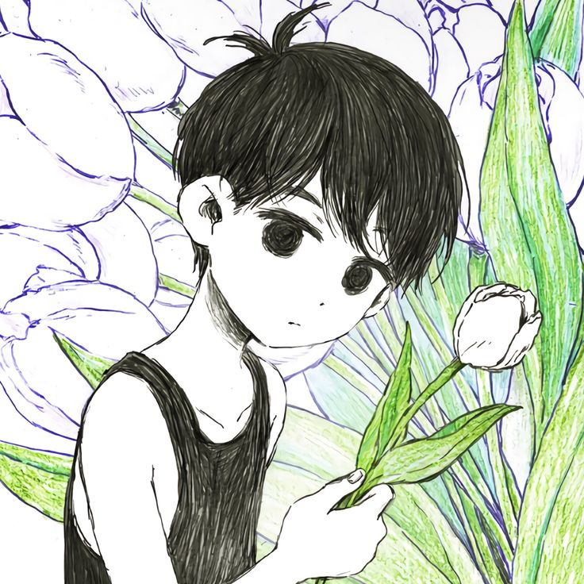
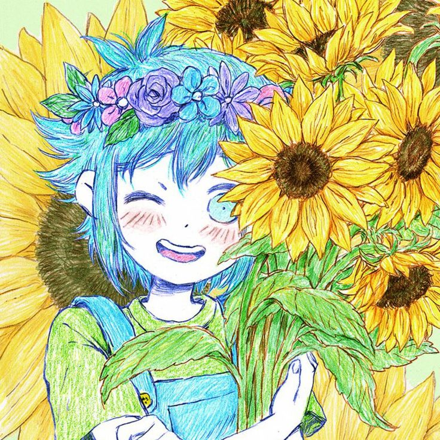
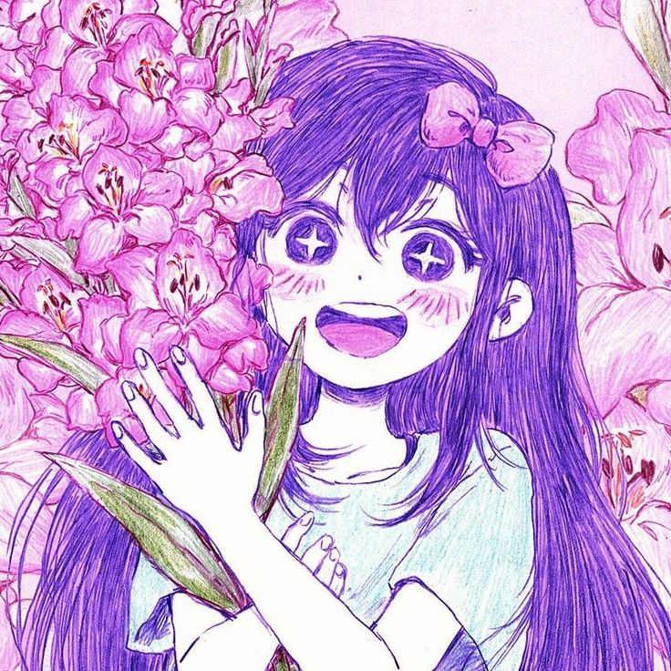

Principales personajes de omori
Daremos una breve presentacion de sus nombres junto con algunas caracteristicas
de cada uno
- Omori
- Basil
- Aubrey
- Kel
- Hero
- Mari
Omori

Es el personaje protagonista, un chico blanco-y-negro
que vive en el ESPACIO BLANCO (White Space) desde que tiene
uso de razón. Él puede OBSERVAR a sus enemigos o leer un POEMA
TRISTE (Sad Poem) para ENTRISTECER a alguno de sus amigos.
Sus SEGUIMIENTOS son ofensivos y extrañamente no involucran
trabajar con sus amigos con la excepción de su ataque más
poderoso, LIBERAR ENERGÍA.
Basil

BASIL es un niño relativamente tímido, bien visto después de
ser presentado al grupo de amigos, siendo bastante inseguro y
temiendo ser visto como una carga. Le gusta tomar fotografías,
ya que sus recuerdos con sus amigos son su bien más preciado,
percibiéndolas como una forma de capturar permanentemente el momento.
También le gusta cuidar flores, el arte y la lectura. BASIL parece desarrollar
fuertes vínculos emocionales con muchas de sus posesiones, ya que nunca tira nada,
por inútil que sea.
Aubrey

Durante su juventud, AUBREY fue muy alegre y siempre feliz de jugar
con sus amigos. De voluntad fuerte y siempre fiel a sus sentimientos,
sirve como una fuente constante de moral para sus amigos.Esto se
extiende a menudo recordarle al grupo qué es lo correcto cuando están
distraídos.A pesar de esto, ella se entristece y se preocupa con
bastante facilidad; es la más ansiosa del grupo de amigos cuando BASIL
desaparece.
Kel

Durante su juventud, KEL es un poco malcriado, impulsivo y grosero,
y siempre se mete en pequeñas peleas con sus amigos. Es muy competitivo
por naturaleza, siempre quiere ganar juegos o carreras y, de hecho, es
muy enérgico y rápido. También piensa que el romance es asqueroso y que
las chicas tienen piojos.Sin embargo, a pesar de que es ruidoso
y le gusta molestar a sus amigos, realmente se preocupa por ellos hasta el
punto de protegerlos constantemente con un fuerte sentido de justicia.
Hero

Durante su juventud, HERO es el pacificador del grupo, que intenta
contener a sus amigos cuando se ponen demasiado nerviosos. Se le
describe como de personalidad apacible y apasionado por el trabajo
doméstico como hornear, cocinar y limpiar, lo que lo convierte en un
empleado ideal. HERO también tiene un lado carismático que usa para
encantar a los demás.Su carisma le permite convencer a otros para
que acepten sus solicitudes, obtengan descuentos de MAILBOX y se
hagan amigos de animales como EMS . Sin embargo, a veces puede ser
fácil de convencer cuando se le confronta y tiene dificultades para
rechazar a los demás.
Mari

A menudo se habla de ella como amable y gentil, y desempeña un
papel de hermana en el grupo de amigos con SUNNY , HERO , KEL ,
AUBREY y BASIL . Su primera aparición muestra que tiene un lado
travieso, burlándose de los gestos de KEL y AUBREY y luego burlándose
de HERO. Estos rasgos se comparten con su homólogo de HEADSPACE.
Más adelante en el juego, también se revela que cuando MARI era
más joven, le hacía bromas especialmente a HERO, como poner insectos
en su pupitre de la escuela. También se demuestra que era una perfeccionista
y pasaba horas practicando la misma pieza de piano una y otra vez.
.jpg)